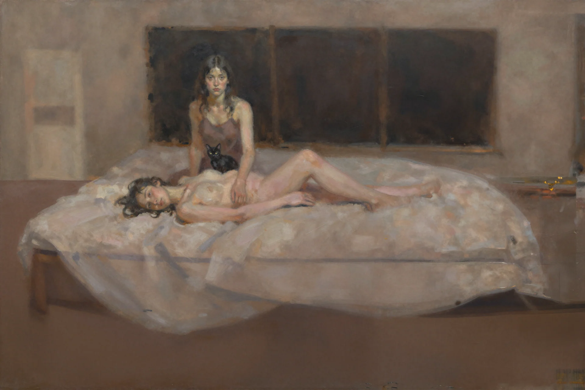
Series / AI-assisted archive / 2025-2026
False Restorations
Archived images reassembled through Photoshop, ComfyUI, Z-Image Turbo, memory, and machine interpretation.
Series / AI-assisted archive / 2025-2026
A collection of painterly AI-assisted works created from old archived source images, reworked in Photoshop and regenerated through ComfyUI with Z-Image Turbo. The series transforms archival material into intimate, unstable interior scenes where bodies, memory, and machine reconstruction merge into fictional paintings.
These works are not attempts to restore the archive, but to disturb it. The images move between painting, memory, and machine reconstruction. Figures appear inside quiet rooms, surrounded by portraits, furniture, windows, animals, and fragments of domestic life.
I am interested in the moment where an image stops being a document and becomes a ghost of itself. The archive here is alive, corrupted, theatrical, and uncertain: beauty, error, intimacy, and distortion exist together.
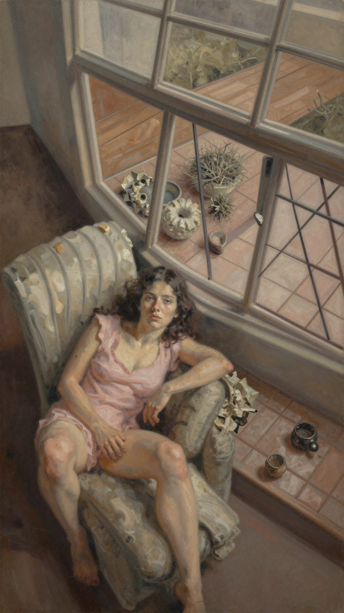
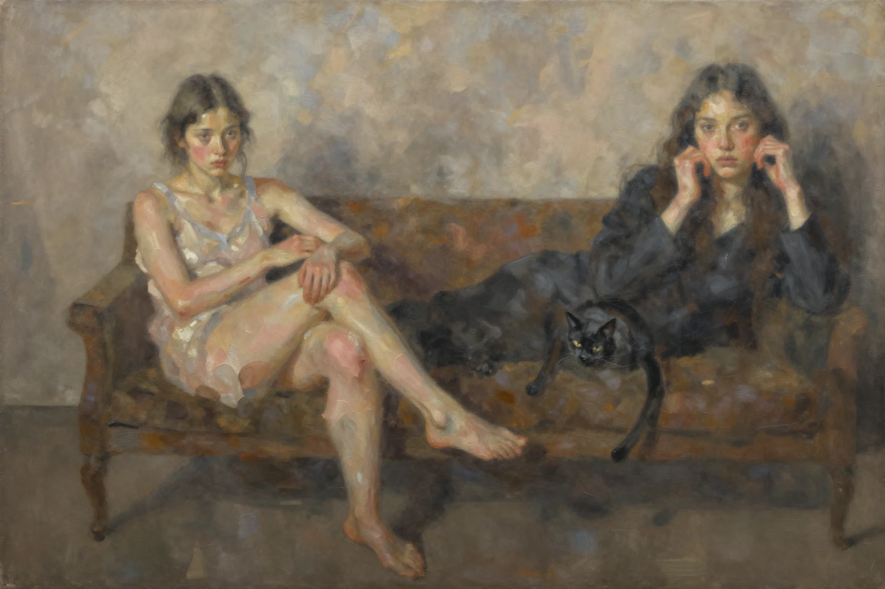
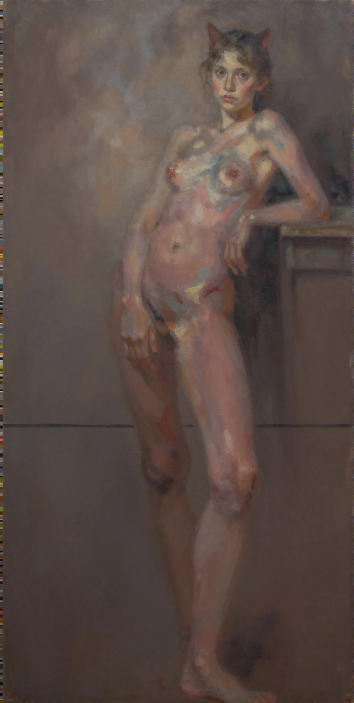
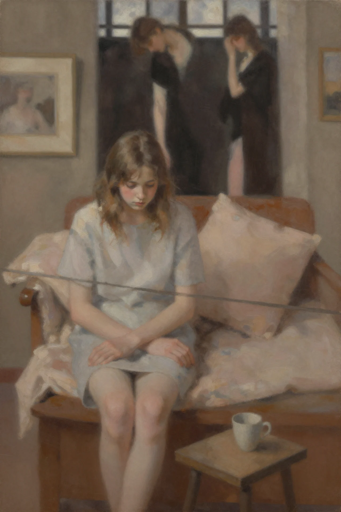
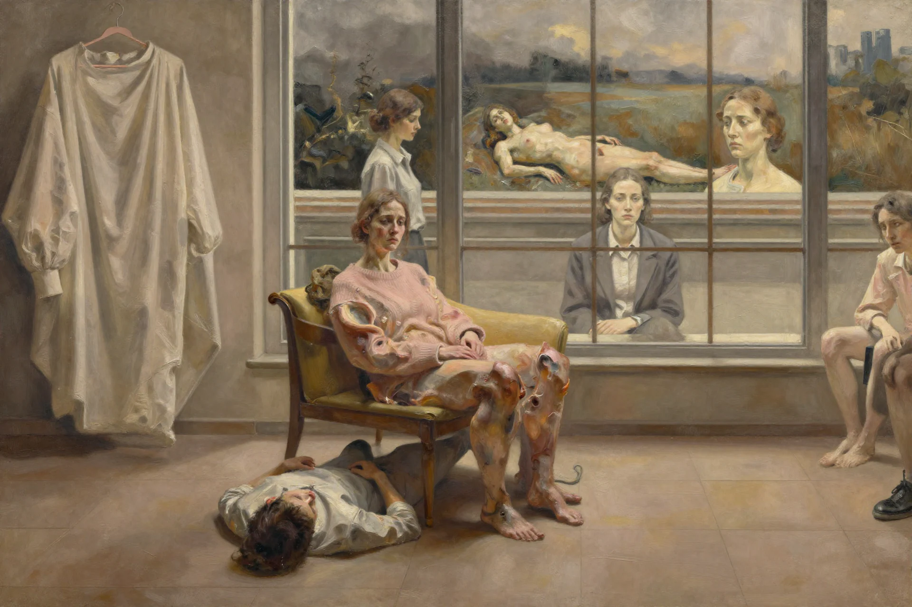
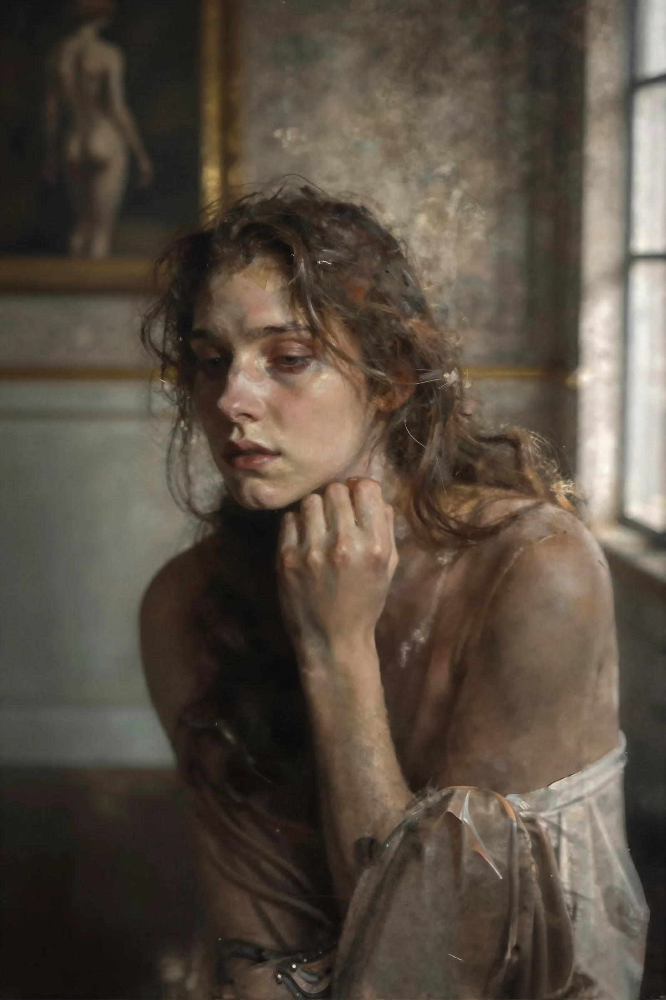
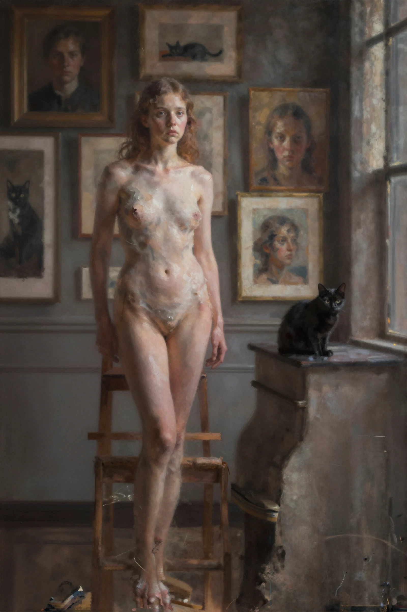
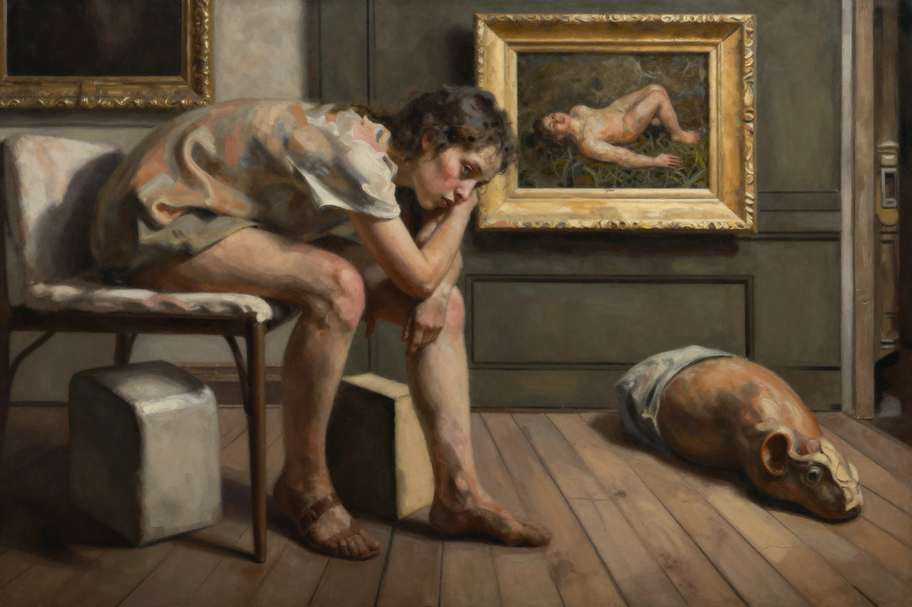
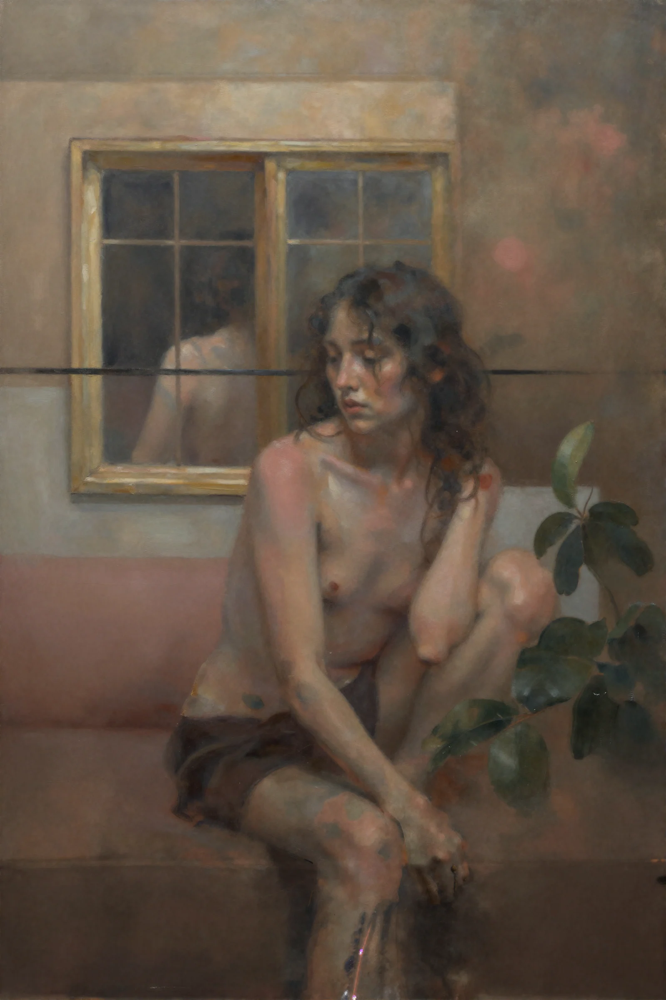
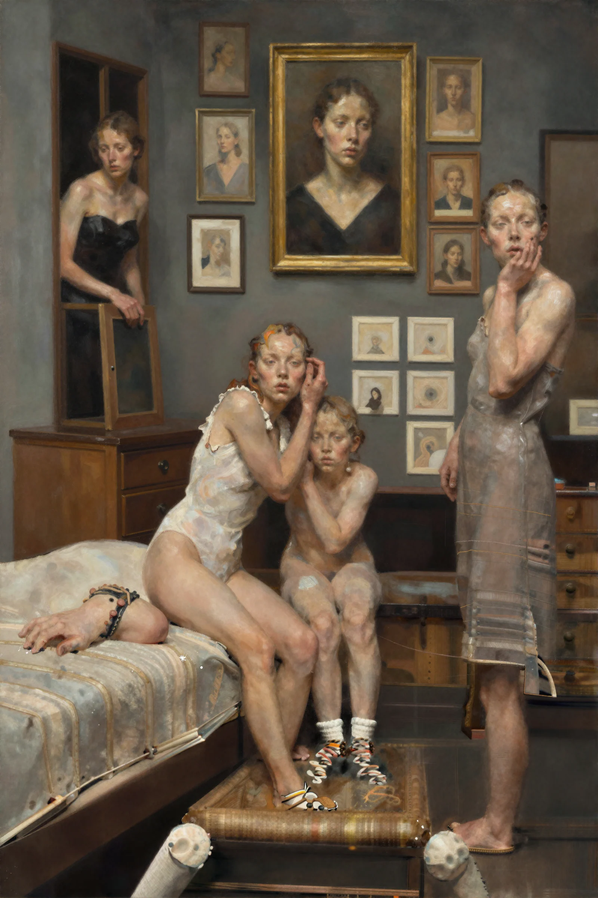
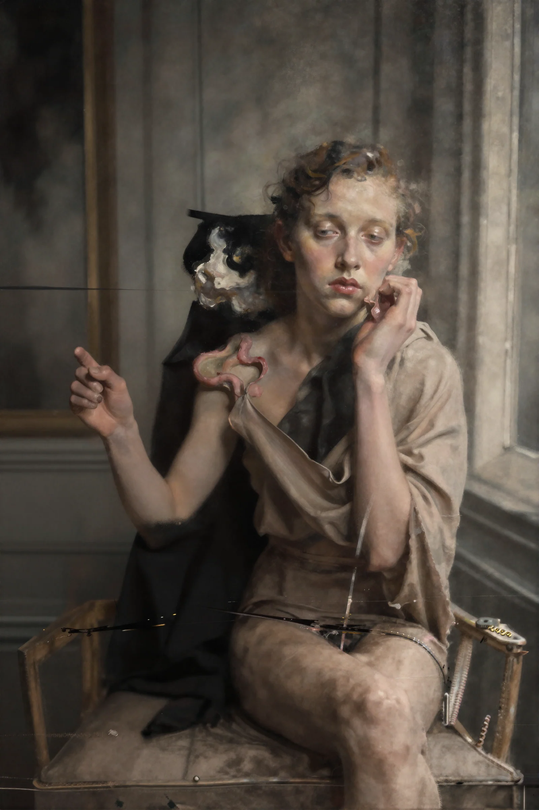
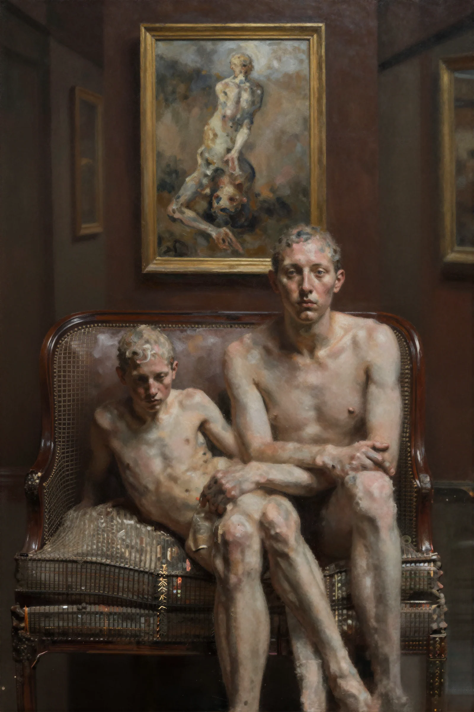
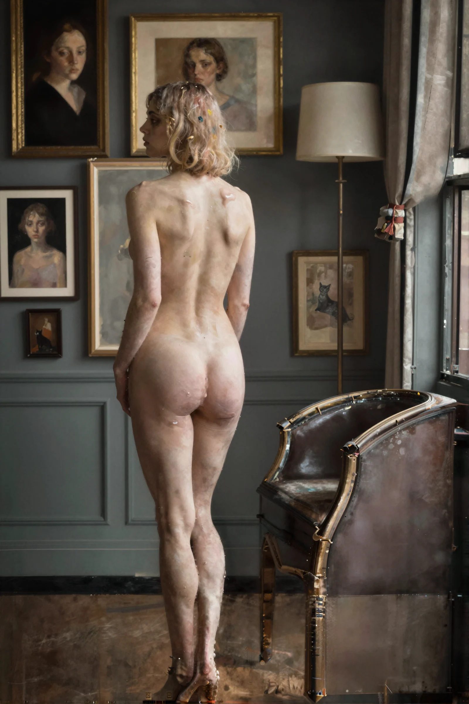
Process note / Archive reassembled
The body is not restored; it is reassembled through paint, artifact, memory, and machine interpretation. Technology becomes atmosphere, like dust on an unfinished painting.